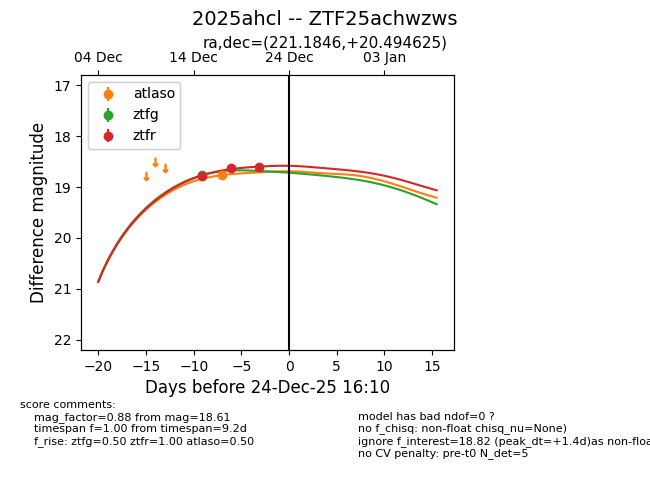
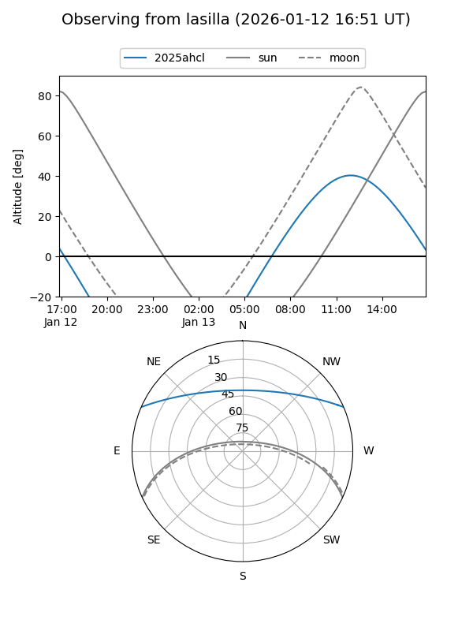
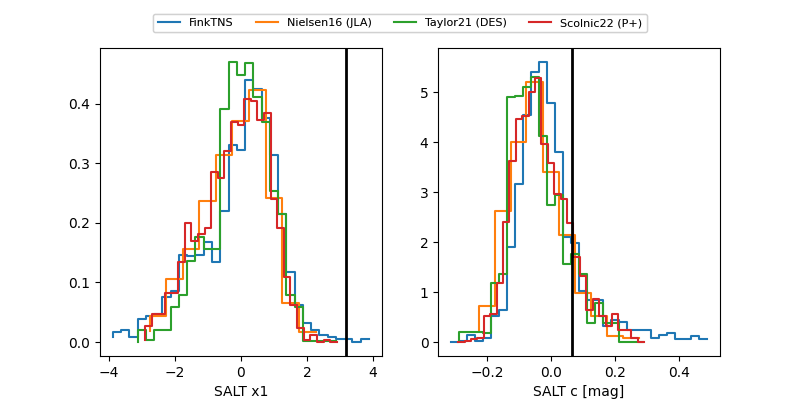

2025ahcl
Target 2025ahcl at 2025-12-31 16:59
Aliases and brokers:
FINK:
Lasair:
ALeRCE:
TNS:
YSE:
alt names
ZTF25achwzws (ztf,fink_ztf)
2025ahcl (tns,yse)
Coordinates:
equatorial (ra, dec) = 221.1846,+20.49462
equatorial (HMS+DMS) = 14:44:44.31,+20:29:40.65
galactic (l, b) = (24.6896,+63.31523)
Flags:
Photometry:
last atlaso=18.77, ztfg=18.77, ztfr=18.56
1 atlaso, 1 ztfg, 4 ztfr detections
Lightcurve

Visibility


Additional plots
